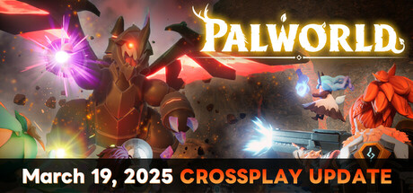

What Data Reveals About Game Success
Overview 🌍
Steam is the largest digital distribution platform for PC gaming, with millions of active users and a vast library of games spanning every genre. As the go-to marketplace for both indie developers and major studios, Steam serves as a crucial indicator of gaming trends and player preferences.
But what makes some games thrive while others fade into obscurity?
A Look Through Time ⌛
With nearly 19,000 games released in 2024 (~32.5% ▲ 2023), Steam’s marketplace is expanding faster than ever.
(Look on the left for some of the top-selling releases of 2024. Based on Best of Steam 2024 and availability on the dataset used. Hover on the image for more details)
To identify peak release schedules, let’s take a closer look at how game releases have evolved over time and see if any pattern emerges.



Seasonal Trends...
Looking at the cumulative game releases from 1969 to 2025, an interesting trend emerges—most games
tend to launch at the end of the month, with
May
Early Summer ⛅
May is often a key release window for games looking
to capture summer break audiences with emphasis on the start of school breaks.
,
July
Peak Summer Vacation 🌊
July marks the peak of summer where many individuals have increased leisure time,
making it a strategic time for new releases.
, and
November
Holiday Sales Boost ⛄
November is a prime time for game launches due to Black Friday, holiday shopping,
and pre-holiday marketing pushes.
standing out as the top release months.
A major shift in release frequency happened in 2015, marking a surge in year-round releases, likely
influenced by Steam’s growing role as a dominant distribution platform. Additionally, a consistent
weekly pattern appears in the yearly trends:
Wednesdays and Thursdays
📅 Midweek Release
Marketing Strategy: Early-week launches allow for media coverage and hype before the weekend.
Behavior: Players plan purchases midweek to enjoy new games over the weekend.
Avoiding Competition: Fridays/Saturdays are crowded with movie and music releases.
Industry Tradition: Some regions, like Japan, have long favored Thursdays for game launches.
see the highest number of releases, while Fridays and Saturdays have the fewest.
🛈 Hover here for animation info. Select a year range and animation mode then press the start button to see these trends in action. Cumulative shows all the games released from the indicated start year and end year while Year by year only includes games for that year. Click the reset button to reset the plot.
Shifting Focus to Genres 🔍
Now that we’ve explored when games are released, what about the types of games that dominate Steam?
Genres play a key role in shaping player engagement, reviews, and playtime. Some genres thrive with dedicated communities, while others struggle to find an audience.
By analyzing trends in player engagement, playtime hours, niche genres, and multiplayer preferences, we can uncover what makes certain genres more successful than others.
Review Sentiment...
The playerbase of indie, simulation and casual games seem to be more chill when leaving a comment or review, possibly due to the non-competitive nature of these generes. On the other hand, people tend to be less lenient on reviews for multiplayer games, possibly because there are more chances a multipler game could go wrong: bad balance with champions/guns, lagging issues with the server, or pay-to-win microtransactions.
Reviews by Genres...
Player Engagement...
Game Genre Growths Over Years...
The data reveals notable trends across the most popular game genres over approximately two decades. Action games have demonstrated consistent growth throughout this period. Adventure games, despite substantial genre overlap, have shown a declining trend in the past five years. Sports games have exhibited a remarkable upward trajectory since 2012, with continued growth to the present. Other significant genres—simulation, racing, and casual-have maintained relatively stable player bases with only minor fluctuations over time.
Niche Genres...
Main Message...
The Complexity of Game Success
While trends give us insight, they don’t tell the full story. The gaming industry is full of outliers—games that defy expectations, proving that success often depends on the right mix of timing, features, and community engagement.
Solution...
Key Takeaways for Developers
While patterns can guide decision-making, engaging with the player community is crucial for success.
We conclude by summarizing key findings while emphasizing the presence of outliers, reinforcing the idea that no single strategy works for every game. For developers, this means that understanding your audience’s expectations, aligning your release timing, and fostering long-term community engagement are key to standing out in a crowded market.